Contents
Script for NPV value of lamps
clear all; close all;
Global variables
global DISCRETE_TIME; global TOTAL_CYCLES; global END; global YEAR; global SIM_TIME; global PRICE_ELETRICITY; global TOTAL_LAMPS; global FIRST_LAMPS; RATE = 0.05; DISCRETE_TIME = 100; YEAR = ((14 + 2 + 3)*2)*5*12; TOTAL_YEARS = 30; TOTAL_CYCLES = fix(YEAR*TOTAL_YEARS/DISCRETE_TIME) + 1; END = DISCRETE_TIME*(TOTAL_CYCLES - 1); SIM_TIME = 0:DISCRETE_TIME:END; PRICE_ELETRICITY= 0.239*10^(-3);
Loading of lamps
LAMP = load_lamps(TOTAL_CYCLES, DISCRETE_TIME); TOTAL_LAMPS = sum(LAMP(1).Count(1,:)); FIRST_LAMPS = LAMP(1).Count(1,:);
Life Simulation
For each lamp
for c=2:size(LAMP,2) % For each scenario for d=1:size(LAMP(c).Scenarios,2) % For the start [LAMP(1).Count, LAMP(c).Scenarios(d).Count] = ... t0Replacement(LAMP(1).Count, LAMP(c).Scenarios(d).Count,... LAMP(c).Scenarios(d).Replacement); LAMP(c).Scenarios(d).CountEletricity(1) = DISCRETE_TIME *... (sum(LAMP(1).Count(1,:))*LAMP(1).Watts+... sum(LAMP(c).Scenarios(d).Count(1,:))*LAMP(c).Watts); % For each time step after t0 for e=2:TOTAL_CYCLES % ORIGINAL LAMPS % Checks each one from last to second for f_v =0:size(LAMP(1).Count,2)-2 f = size(LAMP(1).Count,2)-f_v; % passes the good lamps to the next section in time LAMP(1).Count(e,f) = ... LAMP(1).Count(e-1,f-1)*(1 - LAMP(1).ProbRateExp(f)); end % first <- there is no replacement for the original lamps LAMP(1).Count(e,1) = 0; % NEW LAMPS % Checks each one from last to second for f_v=0:size(LAMP(c).Scenarios(d).Count,2)-2 f = size(LAMP(c).Scenarios(d).Count,2) - f_v; % passes the good lamps to the next section in time LAMP(c).Scenarios(d).Count(e,f) = ... LAMP(c).Scenarios(d).Count(e-1,f-1)* ... (1 - LAMP(c).ProbRateExp(f)); end % first <- replacement to maintain the lamps in the system LAMP(c).Scenarios(d).Count(e,1) = ... TOTAL_LAMPS - (sum(LAMP(1).Count(e,:)) +... sum(LAMP(c).Scenarios(d).Count(e,:))); % eletricity spent LAMP(c).Scenarios(d).CountEletricity(e,1) = DISCRETE_TIME *... (sum(LAMP(1).Count(e-1,:))*LAMP(1).Watts +... sum(LAMP(c).Scenarios(d).Count(e-1,:))*LAMP(c).Watts) ; end end end
Accounting of new lamps
for c=2:size(LAMP,2) for d=1:size(LAMP(c).Scenarios,2) % New Lamps [LAMP(c).Scenarios(d).YearTime,... LAMP(c).Scenarios(d).YearLamps] = ... yearly_lamps(LAMP(c).Scenarios(d)); % Sum of new lamps LAMP(c).Scenarios(d).YearLampsSum = ... specialSum(LAMP(c).Scenarios(d).YearLamps,0); % In money LAMP(c).Scenarios(d).MoneyLamps = ... -LAMP(c).Scenarios(d).YearLamps*LAMP(c).Price; % Sum of money LAMP(c).Scenarios(d).MoneyLampsSum = ... specialSum(LAMP(c).Scenarios(d).MoneyLamps,RATE); end end
Accounting of eletricity
for c=2:size(LAMP,2) for d=1:size(LAMP(c).Scenarios,2) % Eletricity [~,LAMP(c).Scenarios(d).YearEletricity] = ... yearly_eletricity(LAMP(c).Scenarios(d)); % Sum of eletricity LAMP(c).Scenarios(d).YearEletricitySum = ... specialSum(LAMP(c).Scenarios(d).YearEletricity,0); % In money LAMP(c).Scenarios(d).MoneyEletricity = ... -LAMP(c).Scenarios(d).YearEletricity*PRICE_ELETRICITY; % Sum of money LAMP(c).Scenarios(d).MoneyEletricitySum = ... specialSum(LAMP(c).Scenarios(d).MoneyEletricity,RATE); end end
Plots
All the plots
Lamp Plots
Sum of the new lamps per year
for c=2:size(LAMP,2) figure() hold on; grid on; title(['New lamps per year: ' LAMP(c).Name]); for d=1:size(LAMP(c).Scenarios,2) plot(LAMP(c).Scenarios(d).YearTime,... LAMP(c).Scenarios(d).YearLamps,... 'Marker', "*"); end end % Total of the new lamps until year for c=2:size(LAMP,2) figure() hold on; for d=1:size(LAMP(c).Scenarios,2) plot(LAMP(c).Scenarios(d).YearTime,... LAMP(c).Scenarios(d).YearLampsSum,... 'Marker', "*"); LEGEND{d} = ['r_0 = '... num2str(LAMP(c).Scenarios(d).Replacement*100)... '%']; end % Plot things grid on; title(['Cumulative lamps: ' LAMP(c).Name]); legend(LEGEND{1:d}); end % Total of the money spent in lamps until year for c=2:size(LAMP,2) figure() hold on; for d=1:size(LAMP(c).Scenarios,2) plot(LAMP(c).Scenarios(d).YearTime,... LAMP(c).Scenarios(d).MoneyLampsSum,... 'Marker', "*"); LEGEND{d} = ['r_0 = '... num2str(LAMP(c).Scenarios(d).Replacement*100)... '%']; end % Plot things grid on; title(['Cumulative money spent on lamps: ' LAMP(c).Name]); legend(LEGEND{1:d}); end
 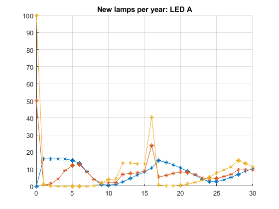 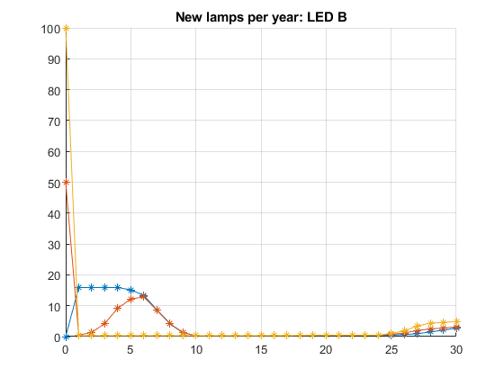 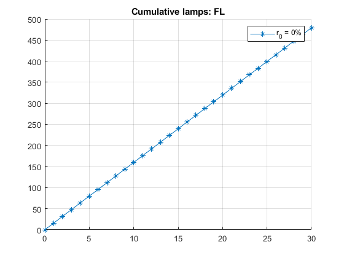 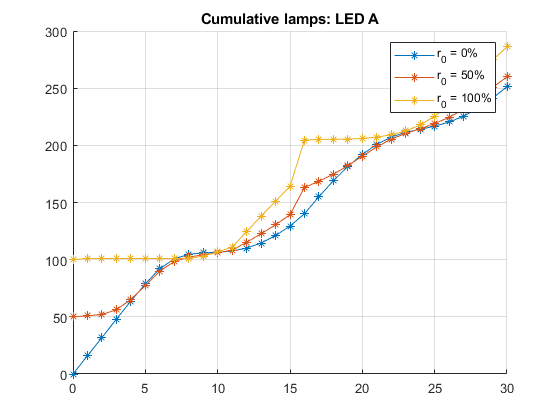 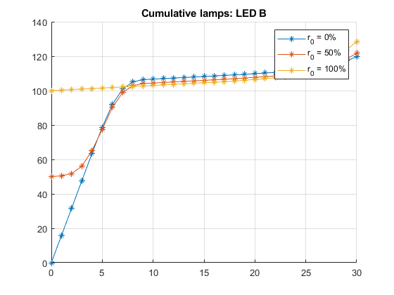 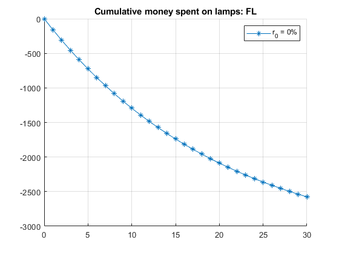 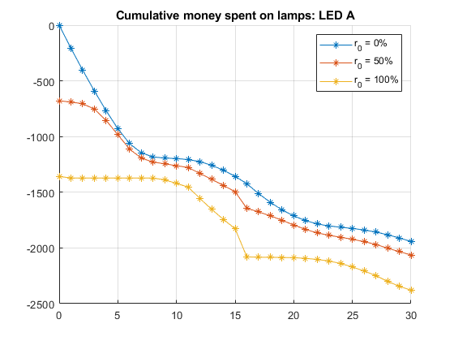 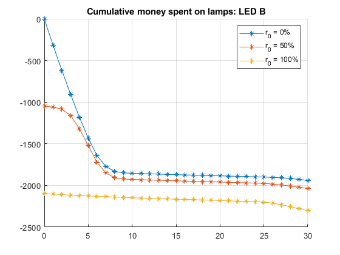
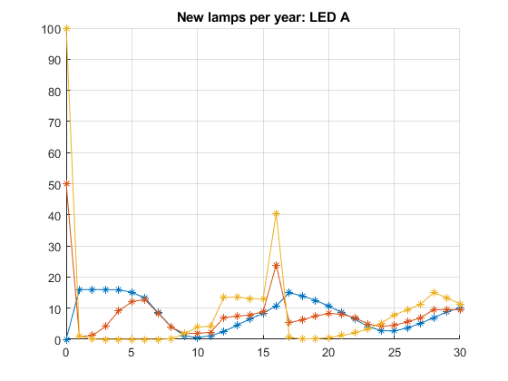 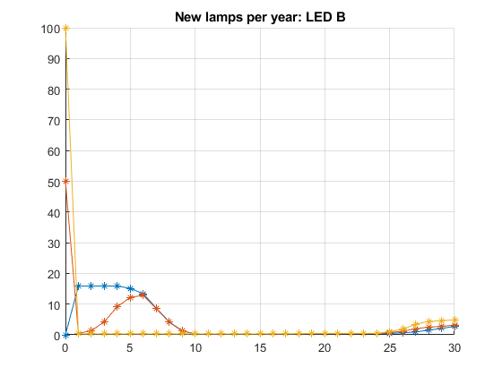 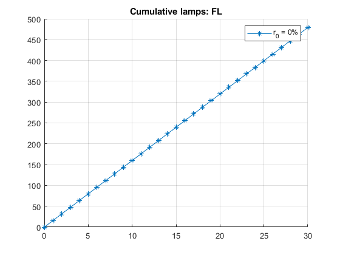 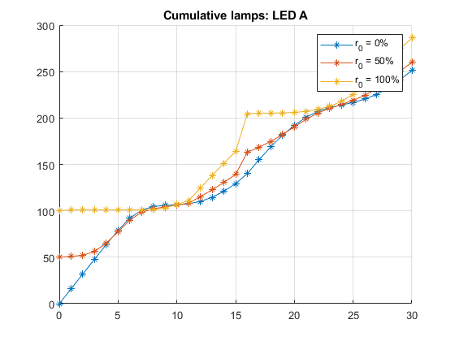 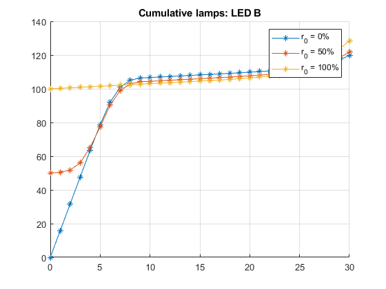 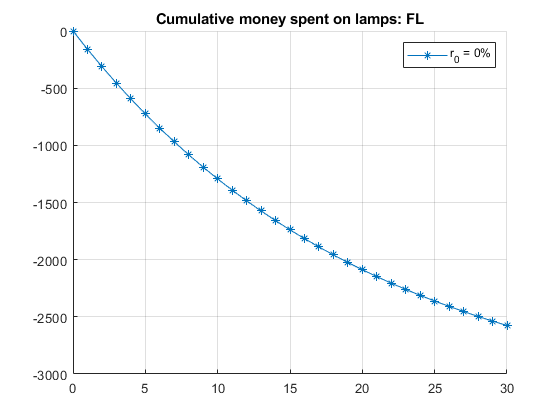 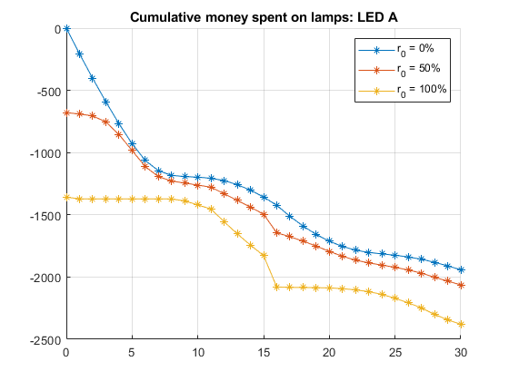 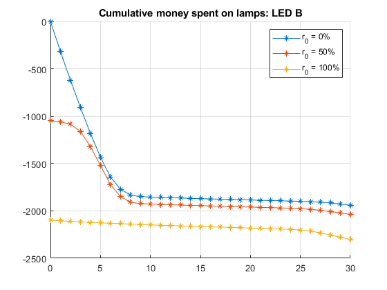 Eletricity Plots
Sum of the eletricity per year
for c=2:size(LAMP,2) figure() hold on; grid on; title(['Eletricity per year: ' LAMP(c).Name]); for d=1:size(LAMP(c).Scenarios,2) plot(LAMP(c).Scenarios(d).YearTime,... LAMP(c).Scenarios(d).YearEletricity,... 'Marker', "*"); end end % Total of the new lamps until year for c=2:size(LAMP,2) figure() hold on; for d=1:size(LAMP(c).Scenarios,2) plot(LAMP(c).Scenarios(d).YearTime,... LAMP(c).Scenarios(d).YearEletricitySum,... 'Marker', "*"); LEGEND{d} = ['r_0 = '... num2str(LAMP(c).Scenarios(d).Replacement*100)... '%']; end % Plot things grid on; title(['Cumulative eletricity used: ' LAMP(c).Name]); legend(LEGEND{1:d}); end % Total of the money spent in lamps until year for c=2:size(LAMP,2) figure() hold on; for d=1:size(LAMP(c).Scenarios,2) plot(LAMP(c).Scenarios(d).YearTime,... LAMP(c).Scenarios(d).MoneyEletricitySum,... 'Marker', "*"); LEGEND{d} = ['r_0 = '... num2str(LAMP(c).Scenarios(d).Replacement*100)... '%']; end % Plot things grid on; title(['Cumulative money spent on eletricity: ' LAMP(c).Name]); legend(LEGEND{1:d}); end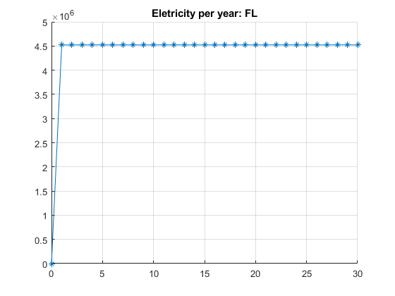 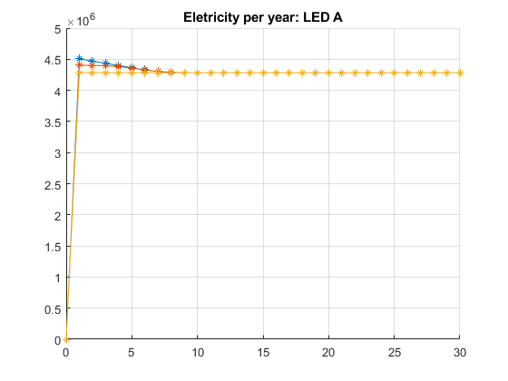 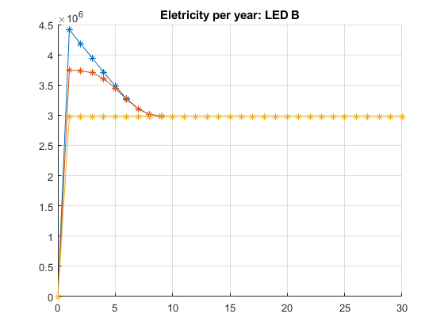 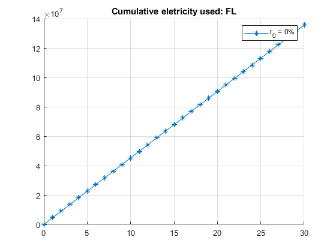 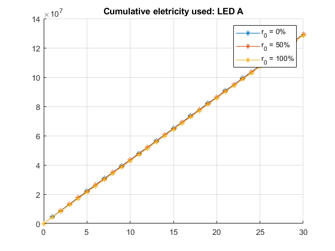 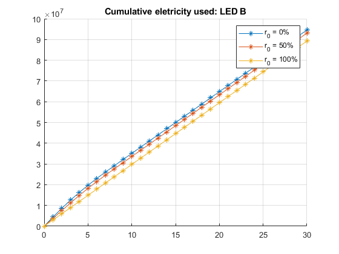 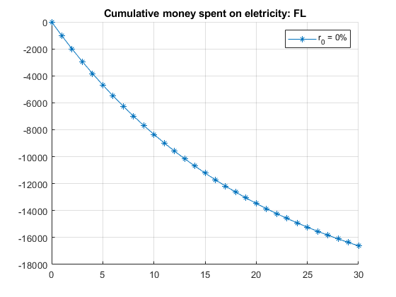 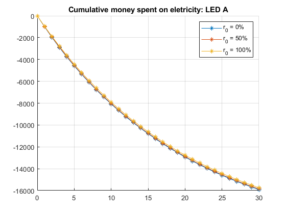 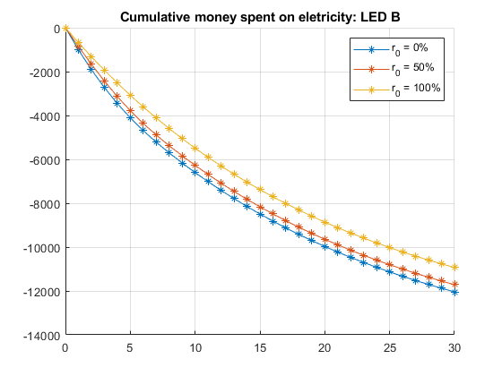
Total Plots
Total of money spent per year
for c=2:size(LAMP,2) figure() hold on; for d=1:size(LAMP(c).Scenarios,2) plot(LAMP(c).Scenarios(d).YearTime,... LAMP(c).Scenarios(d).MoneyEletricity + ... LAMP(c).Scenarios(d).MoneyLamps,... 'Marker', "*"); LEGEND{d} = ['r_0 = '... num2str(LAMP(c).Scenarios(d).Replacement*100)... '%']; end % Plot things grid on; title(['Money spent: ' LAMP(c).Name]); legend(LEGEND{1:d}); end % Total of money until year for c=2:size(LAMP,2) figure() hold on; for d=1:size(LAMP(c).Scenarios,2) plot(LAMP(c).Scenarios(d).YearTime,... LAMP(c).Scenarios(d).MoneyEletricitySum + ... LAMP(c).Scenarios(d).MoneyLampsSum,... 'Marker', "*"); LEGEND{d} = ['r_0 = '... num2str(LAMP(c).Scenarios(d).Replacement*100)... '%']; end % Plot things grid on; title(['Cumulative money spent: ' LAMP(c).Name]); legend(LEGEND{1:d}); end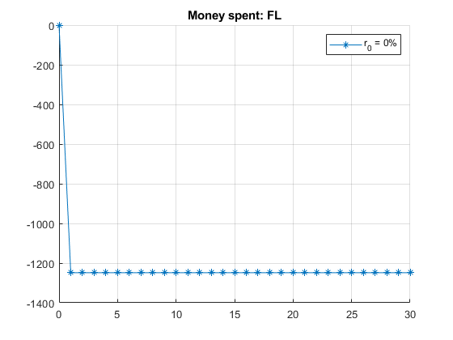 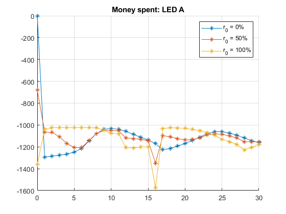 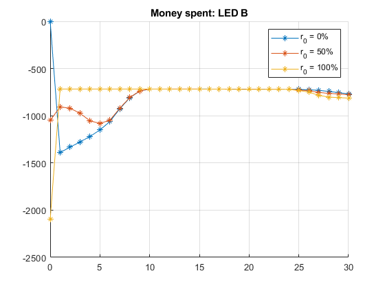 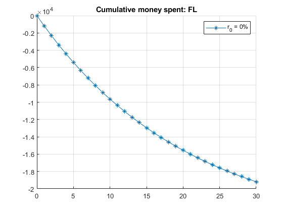 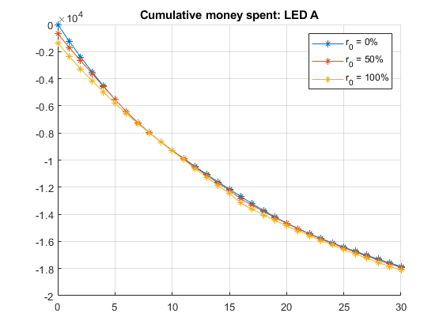 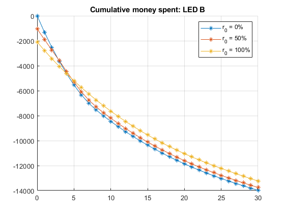
Comparative total plots
for d=1:size(LAMP(3).Scenarios,2) figure() hold on; % First lamps are for comparison plot(LAMP(2).Scenarios(1).YearTime,... zeros(size(LAMP(2).Scenarios(1).YearTime)),... 'Marker', "*"); LEGEND{1} = [LAMP(2).Name]; for c=3:size(LAMP,2) plot(LAMP(c).Scenarios(d).YearTime,... LAMP(c).Scenarios(d).MoneyEletricitySum + ... LAMP(c).Scenarios(d).MoneyLampsSum - ... LAMP(2).Scenarios(1).MoneyEletricitySum - ... LAMP(2).Scenarios(1).MoneyLampsSum,... 'Marker', "*"); LEGEND{c-1} = [LAMP(c).Name]; end % Plot things grid on; title(['NPV at r_i = ' num2str(LAMP(c).Scenarios(d).Replacement*100) '%']); legend(LEGEND{1:c-1}); end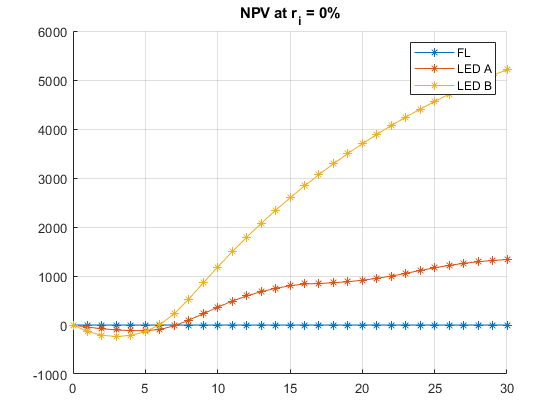 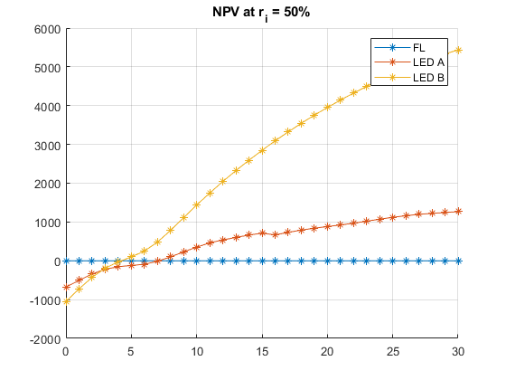

Functions
T_0 replacement
function [STATE_1, STATE_2] = t0Replacement(LAMP_1, LAMP_2, REPLACEMENT) global TOTAL_LAMPS; global FIRST_LAMPS; % Resets first lamps LAMP_1(1,:) = FIRST_LAMPS; % total lamps to replace LAMP_2(1,1) = TOTAL_LAMPS*REPLACEMENT; % replacement of the ones already broken if(LAMP_1(1,1) > LAMP_2(1,1)) LAMP_1(1,1) = LAMP_1(1,1) - LAMP_2(1,1); % replacement of the functioning ones else counter = LAMP_1(1,1); LAMP_1(1,1) = 0; for f_v=0:size(LAMP_1,2)-2 % from last to second f = size(LAMP_1,2) - f_v; if LAMP_1(1,f) > LAMP_2 - counter LAMP_1(1,f) = LAMP_1(1,f) - (LAMP_2(1,1) - counter); break else counter = counter + LAMP_1(1,f); LAMP_1(1,f) = 0; end end end STATE_1 = LAMP_1; STATE_2 = LAMP_2; end
Sum with interest
function SUM = specialSum(x, r) SUM = x; for c=2:size(x,1) SUM(c) = SUM(c-1) + x(c)/(1+r)^(c-1); end end